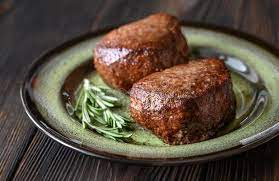

Filet Mignon

Description
A classic, classy dish that's hard to mess up. Perfect for when you want to feel fancy without actually putting forth an effort.
Ingredients
- Filet mignon
- Butter
- Salt & Pepper
Steps
- Pat the steaks dry and season them heavily with salt and pepper on both sides
- Add the butter to a cast iron pan and let it melt
- Put the steak into the pan and let it cook for 2 minutes on each side and then grab a pair of tongs and sear all of the edges of the steak
- Put the pan with the steak into the oven for 10 minutes
- Remove the pan with the steak and let it rest for at least 10 minutes before serving